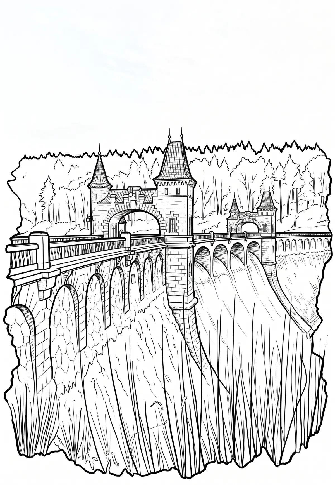

Vodní nádrž Les Království
Královéhradecký kraj · 318 m n. m.

technická památka · #088
Les Království je údolní přehradní nádrž na řece Labi vystavěná v roce 1920. Leží u samoty Těšnov v katastrálním území Bílá Třemešná a Nemojov v okrese Trutnov v Královéhradeckém kraji, 4 km proti proudu od města Dvůr Králové nad Labem, v úzkém údolí, jež prochází Kocléřovským hřbetem.